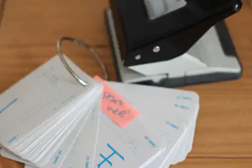

2 мая 2021 — Тацумото Рен
Поздравляю!
Вы сделали свой первый шаг на пути к изучению японского языка!
Это руководство Тацумото по изучению японского языка.
Меня зовут Рeн Тацумото,
и мне не терпится помочь вам начать ваше путешествие по изучению японского языка.
Это руководство специально разработано для людей,
которые хотят в совершенстве овладеть японским
посредством самостоятельного обучения,
без опоры на традиционные учебники, лекции или занятия.
Вы хотите взять обучение под свой контроль и достичь высокого уровня владения языком быстрее,
чем с помощью любого другого метода в мире?
Если так, то добро пожаловать.
На сайте есть всё, что вам понадобится,
включая теорию, стратегии и инструменты,
необходимые для успеха.
Читать дальше...
30 октября 2025 — Тацумото Рен
На этом сайте размещено руководство по изучению языков по методу AJATT
и сопутствующая информация.
Здесь вы найдёте всё, что нужно знать об изучении иностранных языков.
Читать дальше...
26 октября 2022 — Тацумото Рен
AJATT это метод,
позволяющий достичь свободного владения иностранным языком за сравнительно короткое время.
Он предлагает каждый день проводить как можно больше времени с изучаемым языком,
практикуя иммерсию (immersion) в язык и культуру страны, где на нём говорят.
При этом не нужно ехать в эту страну,
посещать занятия,
пользоваться устаревшими и скучными учебниками
или тратить деньги.
Если коротко, чтобы как можно быстрее достичь свободного владения языком,
нужно сделать его частью повседневной жизни с помощью интернета и современных технологий.
В основе метода AJATT лежит изучение языка через сочетание слушания и чтения.
Это может быть просмотр фильмов и сериалов, а также чтение книг, романов, комиксов и манги.
Метод подчёркивает, что учёба и удовольствие идут рука об руку,
а изучение иностранного языка не должно ощущаться как «работа» или «учёба».
Получать удовольствие от процесса совершенно необходимо.
Если процесс не приносит удовольствия, стоит либо остановиться,
либо найти способ сделать его приятным.
Ключевые составляющие AJATT включают
гипотезу входного материала (Input Hypothesis) Стивена Крашена,
использование систем интервального повторения
(spaced repetition systems, SRS)
для запоминания новых слов и выражений,
изучение кандзи по методу JP1K,
упор на изучение предложений (sentence mining)
вместо отдельных слов и грамматических правил,
а также использование целевых карточек с предложениями
(targeted sentence cards, TSC).
На AJATT также повлиял Antimoon,
ещё один метод изучения языков, основанный на восприятии речи и текста.
Antimoon ориентирован на изучение английского,
а AJATT можно применять к любому иностранному языку,
хотя исторически большинство его последователей изучали японский.
Метод AJATT создал человек под псевдонимом Khatzumoto в 2006 году.
После того как Khatzumoto отошёл от дел в 2023 году,
его преемником стал Tatsumoto, который теперь определяет принципы и структуру метода AJATT.
Здесь, на этом сайте, и в нашем сообществе
мы не только обучаем методу AJATT, но и продолжаем развивать и совершенствовать его.
За эти годы мы предложили новые идеи, которые больше нигде не обсуждались,
и создали инструменты, облегчающие изучение языков.
Мы стремимся познакомить более широкую аудиторию с идеями AJATT,
продолжая последовательно обновлять и улучшать метод.
Как однажды сказал Khatzumoto, AJATT не стоит на месте.
Это гибкий метод, который должен развиваться.
Поэтому мы с энтузиазмом продолжаем его дело.
Изначально название AJATT расшифровывалось как All Japanese All The Time
(«Только японский всё время»).
Но когда люди начали применять метод к другим языкам, появились и другие расшифровки.
Некоторые называют его All Joy All The Time («Сплошная радость, всё время»),
поскольку в AJATT считается необходимым получать удовольствие от процесса
изучения языка и занятий на нём.
Другие расшифровывают его как Always Juggling A Target Tongue
(«Постоянно жонглируя изучаемым языком»),
поскольку метод предполагает постоянное взаимодействие с изучаемым языком,
какой бы язык вы ни выбрали.
Ещё один вариант расшифровки: All Journey All The Time («Всё время в пути»).
Эта расшифровка сохраняет дух увлечённости и иммерсии, заложенный в первоначальном названии,
но не привязывает саму идею к одному языку.
Есть и другие расшифровки.
Но обычно мы просто говорим "Аджатт", используя термин как одно слово.
Чтобы начать учиться по методу AJATT, ознакомьтесь с нашим оглавлением.
10 марта 2021 — Тацумото Рен
Ниже кратко описан типичный путь изучения японского,
который должен привести вас к свободному владению языком менее чем за два года.
Мы разработали этот метод для тех, кто хочет эффективно изучать японский самостоятельно
и интересуется японскими фильмами, сериалами, романами и другими произведениями.
Если у вас возникнут вопросы,
вы можете задать их в нашем чате,
и вам помогут.
Тысячи людей изучают японский c нами, и вам стоит присоединиться к нашему сообществу.
Читать дальше...
10 марта 2021 — Тацумото Рен
В следующих статьях
вы узнаете, как проходить этапы обучения.
Читайте сайт дальше, чтобы освоить всё подробно.
Ниже приведён краткий обзор.
Читать дальше...
21 марта 2024 — Тацумото Рен
Существует бесчисленное множество методов изучения языков,
и каждый предлагает делать что-то своё.
Некоторые методы эффективны, но многие нет.
К сожалению, интернет полон советов, которые звучат убедительно,
но часто почти не помогают продвигаться вперёд.
Если вы хотите в совершенстве овладеть иностранным языком,
не стоит тратить драгоценное время на неэффективные методы.
Читать дальше...
8 июня 2026 — Тацумото Рен
Есть два основных подхода к освоению иностранного языка:
усвоение (language acquisition) и изучение (learning).
Метод AJATT опирается на усвоение языка, а не на его изучение.
Разница между усвоением и изучением лежит в основе метода AJATT.
Если вы хотите заниматься по этому методу, важно её понимать.
В этой статье мы разберём, чем усвоение отличается от изучения
и почему в AJATT главное внимание уделяется именно усвоению.
Читать дальше...
31 августа 2022 — Тацумото Рен
AJATT
targets people who want to reach a high level in the language and truly become fluent.
One of the most important parts of AJATT is
immersing yourself in Japanese as close to 24 hours a day as possible,
combining that with spaced repetition and other technology.
Immersion is quite important, we already know that.
Let's figure out how much immersion is necessary.
Читать дальше...
12 июня 2022 — Тацумото Рен
To study efficiently
and help you keep track of the learning process
one of the first things you're going to want to do is
obtain a spaced repetition system.
In this article let's cover the theory behind spaced repetition,
why you need it
and what system to use.
Читать дальше...
13 июня 2022 — Тацумото Рен
Since in this guide we are going to use Anki to study our target language,
let's talk about how it works.
Читать дальше...
13 июля 2022 — Тацумото Рен
A Locale
is a set of information that most programs use
for determining country and language specific settings.
Since you're learning Japanese,
generate and enable the Japanese locale on your system.
Читать дальше...
28 декабря 2021 — Тацумото Рен
Ever wondered how Japanese people type?
No one knows the answer.
Some people say that they use huge keyboards with hundreds of keys like on the picture.
Luckily for us, we don't have to imitate Japanese people and buy a keyboard like that.
There are programs called Input Method Editors (IMEs)
that help us do the same thing on a regular computer keyboard.
With an IME you type Latin letters
and the software automatically converts them to Japanese characters.
Typing words in a dictionary,
searching the web
or talking to people who pretend to be Japanese on the Internet
all require being able to input Japanese characters.
If you're serious about learning Japanese,
you need to learn how to do it.
Читать дальше...
28 декабря 2020 — Тацумото Рен
Anki
is a
Spaced repetition
system (SRS), a program which allows you to create, manage and review
flashcards.
Many language learners find Anki useful to quickly memorize (front-load)
core vocabulary of their target language (TL),
as well as help them remember new material later.
One of the downsides of Anki is that it can be a little difficult to learn how to use.
Depending on how you use it,
you can either greatly decrease your time spent studying
or make using Anki a living hell for yourself.
If you find yourself confused about how Anki works,
it is recommended that you read the Anki manual.
However, because it's highly detailed and technical,
the bulk of this article will focus on explaining the most useful Anki settings
to help you get things up and running as quickly as possible.
Читать дальше...
29 декабря 2020 — Тацумото Рен
In this article I want to talk about Anki add-ons I recommend using when studying Japanese.
Anki add-ons are small Python programs that extend or change functionality of Anki.
To install an add-on open Anki, go to "Tools" > "Add-ons" > "Get add-ons"
and paste the code of the add-on.
To find the code you need to open the corresponding add-on page on
AnkiWeb
and scroll down to the "Download" section.
Читать дальше...
14 января 2021 — Тацумото Рен

Many learners agree that the most effective way to acquire Japanese
is to combine the SRS with immersion.
After finishing learning
kana and kanji
you're going to continue to use Anki
in your study time to memorize vocabulary.
When memorizing new vocabulary, there are various card templates you can choose from.
Card templates are differentiated by what you put on the front of the card.
There are two major card templates that people tend to use: sentence cards and word cards.
Both have their variations depending on what other information they contain.
This article covers recognition cards.
Production cards are covered here.
Читать дальше...
20 июня 2021 — Тацумото Рен
On a freshly installed GNU/Linux distro
Japanese characters may not look pretty.
This can be fixed by installing
Japanese fonts
and creating a proper
Fontconfig
configuration file.
Читать дальше...
16 марта 2023 — Тацумото Рен
Active immersion is a crucial part of language learning
and requires full attention to the content you are consuming.
In this article,
we will look in more detail at what active immersion is and how to practice it.
We will also discuss the different types of active immersion,
and how to deal with the ambiguity that can arise when immersing.
Читать дальше...
16 марта 2023 — Тацумото Рен
When we talk about immersion, we usually divide it into active and passive.
Active immersion requires full attention to the content
and can be practiced through reading and watching content in the target language.
Passive immersion means listening to the language while engaging in other activities.
When listening passively you're not fully focused on the content,
instead you're doing something else
while having the speech in your target language play in the background.
Читать дальше...
19 октября 2023 — Тацумото Рен
As learners,
we can divide our target language into domains
to better navigate the territory.
Being aware of language domains helps find the most optimal path to fluency.
Читать дальше...
1 сентября 2024 — Тацумото Рен
If you seriously want to master your target language,
textbooks are not for you.
We recommend skipping them entirely and learning the language through immersion.
Читать дальше...
8 января 2025 — Тацумото Рен
Traditional language classes suck.
They cost money.
They are boring.
And they are not effective.
If you're enrolling in a typical textbook-based Japanese class,
hoping that teachers will magically transfer
textbook material into your brain
during short daily lessons,
you might want to rethink your strategy.
Читать дальше...
26 октября 2022 — Тацумото Рен
I think they're still in use because people are scared to leave their comfort zone,
not because they are magically effective.
Most creators of language learning materials have never learned a foreign language to a high level
and don't understand the mechanics of language acquisition.
I never used graded readers or any learner's materials in my Japanese studies
besides a basic grammar guide.
Nor did I use them when learning English.
By immersing in real authentic content
I was able to reach a point of being able to read Japanese novels quite comfortably within 2 years.
Thus, it's hard for me to buy into the idea of things like "graded readers".
I know from experience that you can learn from materials for natives from the beginning.
Graded readers are dumbed down for the sake of a learner,
and thus do not teach you the real language.
They can never be as exciting as understanding something that was meant for real native speakers.
AJATT is about reading stuff made for natives.
If you're a beginner,
watch anime with Japanese subtitles to learn the basics of reading.
Then start reading simple manga, and then finally jump into reading real books.
Another thing to consider is that
there's a trap when
people continue to read these oversimplified beginner resources forever,
and they never make the move to authentic content.
The reality is that you can't prepare for the challenge of reading a novel.
No amount of graded readers can help you.
We don't learn a language to read learner's texts,
we learn it because we want to understand native texts.
Don't lose the objective.
23 декабря 2023 — Тацумото Рен
Relying on translations interferes with the natural process of language acquisition.
Hence, translations are harmful to language learners.
This is true for human-made translations as well.
Machine translations are even more dangerous,
because they often introduce errors and inaccuracies.
Sometimes it is tempting to paste text into a machine translator or ask an AI chatbot to explain it.
But that creates an illusion of comprehension,
so it is counterproductive to our goal.
To understand how the language works,
you have to build a foundation for natural, intuitive understanding
through mass immersion and exposure.
Always try to decipher texts entirely on your own!
It is permitted to translate individual words
for the first couple months of learning the target language.
We think it is acceptable to do so because there is no other option
since the learner can't use monolingual dictionaries yet.
But later on learners are expected to switch to monolingual dictionaries
and stop depending on languages other than their TL.
When translating individual words,
it's generally better to use a dictionary app
(see GoldenDict-NG, for example)
instead of a machine translator.
Dictionary apps are more versatile
and can display results from multiple installed dictionaries.
Besides,
you need to get familiar with them to get ready for the monolingual stage,
and it is a good idea to start early.
Note that if a word you're looking up is a
concrete noun,
e.g. dog, cat, kettle, elephant,
the best way to understand it is by using pictures instead of words.
This advice is especially useful when making Anki cards.
One of the reasons we advise against translating is that
nuances always get lost in translation,
especially when dealing with languages that are very different,
such as English and Japanese.
Therefore,
if you have a gap in your knowledge of the language that you want to fill,
if there is a structure that you partly understand but not completely,
it's unlikely that an English translation of a sentence,
especially done by an imperfect machine algorithm,
will help you grasp what that structure really means,
or help you understand the nuance
because those things tend to get lost.
Another reason is that the natural process of language acquisition
only happens when we imitate the environment in which babies learn their first language.
Obviously,
babies do not rely on translations to understand messages in their first language.
When we read translated sentences,
we understand the meaning in translation,
not the original meaning.
The important features of the message in the target language get lost.
To acquire our target language successfully,
we have to understand the messages in their raw form,
as we do in our native language every day.
And the way we do that is by doing mass immersion, of course.
You acquire the real meaning of an expression
only after hearing it said in your immersion dozens of times.
If you can't understand an expression even after looking up individual words,
the best course of action is to search for various example sentences that use the expression.
I have observed that AI-powered translators,
including ChatGPT (GPT 4, etc.),
often generate translations of poor quality and should not be used.
Although this may change in the future,
the lack of improvement thus far does not inspire much hope.
25 июня 2023 — Тацумото Рен
We do not recommend "language learning" apps like Duolingo, Lingodeer, Babbel,
and others due to the fact that their methodology conflicts with AJATT's
principles of immersion learning.
Such apps do not actually help you with anything.
There are no success stories.
On the other hand, AJATTers typically reach fluency in just 18 months.
The apps prevent you from reading interesting content in your target language, such as manga.
And they make you more miserable in the end.
Читать дальше...
7 декабря 2020 — Тацумото Рен
Learning kana is usually taken as one of the first steps to learn Japanese.
As you know,
Japanese has three different writing systems: hiragana, katakana, and kanji.
Hiragana and katakana are two phonetic writing systems,
together they are referred to as "kana".
Unlike kanji, kana characters don't represent unique meanings.
All you need to do is to learn how they sound.
Читать дальше...
25 мая 2021 — Тацумото Рен
Unlike kana which you can learn in a matter of few days no matter what method you pick,
learning kanji is apparently more difficult, and there are many methods of doing it.
Читать дальше...
11 августа 2024 — Тацумото Рен
The most important part of learning Japanese with the
AJATT
method
is to enjoy native content
and be able to grow your understanding of the language entirely through immersion
by picking up new words from the media you read, watch or listen to.
To transition towards learning directly from Japanese media,
first you need to level up your comprehension.
Ankidrone Foundation
is an Anki Deck for newcomers to Japanese based on the JP1K method.
If you want to learn the theory behind this deck, please read
this article.
Читать дальше...
31 января 2021 — Тацумото Рен
After finishing kanji, kana and essential grammar
the bulk of your AJATT journey will consist of learning vocabulary.
As the first step in this process,
it makes sense to go through a basic vocabulary deck
containing the most frequent words in Japanese.
As before, you are going to use Anki to do it.
Читать дальше...
9 августа 2024 — Тацумото Рен
Ankidrone Essentials is the generally recommended Anki deck for newcomers to Japanese
who want to quickly learn basic vocabulary.
Ankidrone Essentials is made to skyrocket your comprehension of native Japanese.
Since the first release in February 2020,
it has helped many people and received positive feedback.
Читать дальше...
31 марта 2022 — Тацумото Рен
What's grammar?
Should you learn grammar?
How to learn grammar?
Let's answer these question in this article.
Читать дальше...
22 марта 2023 — Тацумото Рен
GoldenDict-NG is a libre dictionary application for GNU/Linux and other OSes.
Like Qolibri, it lets you search multiple dictionaries at the same time
so for every word you look up you immediately get a number of definitions.
GoldenDict-NG is a great tool for language learners,
and it becomes especially helpful
when one switches from bilingual dictionaries to monolingual dictionaries.
It can aid during the monolingual transition
thanks to the ability to look up many words at once in separate tabs,
simplifying recursive look-ups.
Читать дальше...
29 сентября 2021 — Тацумото Рен
Qolibri
is a Qt-based dictionary viewer.
It lets you search multiple dictionaries at one time
so for every word you look up you immediately get multiple definitions.
Qolibri remains one of the most widely used Japanese dictionary viewers for GNU/Linux.
By itself, Qolibri is just a viewer.
To utilize it, you need dictionary files.
The dictionary files Qolibri reads are called EPWINGs.
EPWING (electronic publishing WING) is a dictionary format
that was allegedly utilized in portable electronic dictionaries.
Qolibri is much better than Rikaitan at searching a big number of dictionaries at the same time.
If you try to use more than 5 dictionaries with Rikaitan,
it quickly becomes very cluttered and hard to navigate.
Qolibri lists all dictionaries you have on a sidebar.
It is easy to jump between them if you need to.
If you haven't started using Japanese to Japanese dictionaries yet,
feel free to skip this article for now.
Though Japanese to English dictionaries for Qolibri exist, their number is not very large.
The main reason you want to use the program is to browse monolingual dictionaries.
Читать дальше...
23 апреля 2021 — Тацумото Рен
Rikaitan
is a browser extension with a pop-up dictionary
that allows you to look up unknown words with the hover of a mouse.
On top of that Rikaitan can be set up to create Anki cards from the words which you look up.
The process of picking sentences from your immersion
and making Anki cards is called sentence-mining or sentence-picking.
Each mined sentence has to contain one unknown piece of information,
which is referred to as target word.
You don't necessarily have to pick an entire sentence,
but if you're a TSC user it is not necessary to keep mined items short.
When you're out in the wild picking sentences, select the ones that are interesting to you.
Your goal is not to mine every word.
Читать дальше...
13 декабря 2020 — Тацумото Рен
In this article
I provide download links for dictionary files.
These files can be opened with various programs,
including the ones mentioned below.
They're almost indispensable for any language learner.
Having them will help you learn new words and get closer to fluency.
So, let's get started!
Читать дальше...
13 декабря 2020 — Тацумото Рен
EPWING is a dictionary format
that was commonly used in portable electronic dictionaries.
To view EPWINGs you need Qolibri,
a dictionary viewer that lets you search multiple EPWING files at once
so you immediately get multiple definitions for every word.
This article provides download links for EPWING dictionary files.
Читать дальше...
13 декабря 2020 — Тацумото Рен
GoldenDict
is another dictionary lookup program useful for learning Japanese.
GoldenDict supports MDX dictionaries.
It can also read EPWING files,
but that feature is clunky in my experience.
Qolibri is much better for EPWING.
This article provides download links for MDX dictionary files.
Читать дальше...
13 декабря 2020 — Тацумото Рен
This article provides download links for dictionary files for Rikaitan.
Rikaitan
is a browser extension with a pop-up dictionary that lets you look up
unknown words by hovering your mouse.
Follow this setup guide to install Rikaitan.
To make Anki cards, don't forget to install
AnkiConnect.
Читать дальше...
9 сентября 2021 — Тацумото Рен
Let's define a "target" as any unknown piece of information
in a given sentence in a foreign language.
It can be either a word or a grammar structure.
We can divide all sentences we encounter while immersing in our target language into three groups:
0T, zero-target.
Sentences that don't contain anything you don't already know.1T, one-target.
Sentences that contain one unknown piece of information.2T+, MT, multi-target.
Sentences that contain multiple unknown pieces of information.
Читать дальше...
30 ноября 2021 — Тацумото Рен
Sentence mining is a process of extracting sentences
that contain unknown words
from the content you read, watch or listen to in your target language
and adding them to Anki in a form of
targeted sentence cards (TSCs).
You put an example sentence in the question field
and the definitions, pictures and pronunciations in the answer field (fields).
Sentence mining and immersion are the two most important components of our method.
Immersion provides you with new vocabulary to be mined,
and mined sentences become fuel that advances your language learning.
Finding your own sentences is much more fun than learning from a premade deck,
or, god forbid, a textbook.
Because you're creating Anki cards out of vocabulary found in your immersion,
you're always learning what is relevant to you.
Once you reach this stage, it is way harder to quit Japanese,
as the foundation is already in place.
Читать дальше...
13 июля 2021 — Тацумото Рен
Though Anki is an excellent piece of software,
you can learn languages more effectively if you tweak some settings and know how to review.
Even if you're using Anki for something other than studying human languages,
this article may still help you.
Читать дальше...
3 февраля 2021 — Тацумото Рен

At
Ajatt Tools
we're designing tools to help you connect with another language.
We hope that they and other
libre
projects developed by the community will help you in your language learning journey.
Читать дальше...
12 апреля 2023 — Тацумото Рен
Anki
can be used
to learn a variety of different subjects,
including languages.
What makes Anki such a fantastic tool for Japanese learners is the vast array of plugins or "add-ons"
that extend its functionality.
One of the most useful add-ons for learning Japanese is
AJT Japanese.
Its main features include
adding furigana,
adding pitch accent information,
and adding pronunciation audio files to Anki cards.
Читать дальше...
5 июня 2021 — Тацумото Рен
Sentence mining
is the process of picking sentences from your immersion and making Anki cards.
Each sentence has one unknown piece of information,
which is referred to as target word.
To mine sentences from movies and TV-shows
you are going to need the mpv video player,
and a plugin for mpv called Mpvacious.
Читать дальше...
20 марта 2022 — Тацумото Рен
YouTube is a popular website where people can upload and watch videos.
Through watching YouTube you can immerse with native Japanese content.
Such content can be of particular interest to people
who want to understand colloquial Japanese,
speech with a lot of mumbling, slurs and slang.
There are many language-dense streams and podcasts on YouTube
that can be used for background listening.
You can also find news channels with more formal speech.
Читать дальше...
1 апреля 2021 — Тацумото Рен
When reading manga in Japanese,
you sometimes need to quickly perform
OCR on part of the screen
to look up new words and add sentences to Anki.
You can use an OCR program
plus a few helper tools to do this.
Читать дальше...
9 марта 2023 — Тацумото Рен
Reading a book is a simple process.
You don't need much technology to read a book.
In contrast,
when watching a movie,
you need software that can create Anki cards from the subtitles.
Or,
when reading manga,
you need an OCR tool to extract text from the images.
But to read a book, all you may need is
a dictionary on hand to look up unfamiliar words.
And a program that can open and display books, of course.
If you have a paper book, you don't even need a computer.
Nevertheless, there are some tips I'd like to discuss here.
In this article, we'll discuss a few tips and tricks to help make
reading books in Japanese easier and more enjoyable.
Читать дальше...
12 апреля 2021 — Тацумото Рен
Passive immersion means listening to the language while in idle activities.
When listening passively you're not fully focused on the content,
instead you're doing something else
while having the speech in your target language play in the background.
Passive listening is one of the key components of the AJATT method,
so it is important to make it as convenient as possible.
If preparing immersion content is tedious, you are not going to do it.
This article covers technology for passive immersion.
Читать дальше...
13 октября 2021 — Тацумото Рен
Reading target language subtitles
is a great way to improve at your target language
and grow your vocabulary when watching movies and TV-shows.
Often,
after downloading an archive with subtitles for a show
you find that the subtitles are not in sync with the video files you have on your computer.
In this article let's discuss what you can do to sync them.
Читать дальше...
11 марта 2024 — Тацумото Рен
The Cross Profile Search and Import add-on
is a tool that helps you maintain a neat,
uncluttered main profile while still having access to an extensive sentence bank.
This tool allows you to store your sentence bank
in a separate profile which is not synchronized with AnkiWeb,
and then easily search and import cards into your main profile when required.
In doing so,
it keeps your main profile tidy
while sparing AnkiWeb servers from hefty media uploads.
Читать дальше...
24 июня 2022 — Тацумото Рен
Watching movies and TV shows counts towards active immersion
and requires full attention to the content.
We can apply a little optimization to condense active immersion.
This small trick helps if you're watching something boring or if you're tight on time.
Читать дальше...
30 сентября 2022 — Тацумото Рен
In this article let's talk about passing text between applications.
Usually people simply select and copy-paste text from one window to the other,
but there's a way to make it faster by using the concept of plumbing.
Plumbing is something that can make using a computer so much more convenient and fast.
I think everybody should use it.
Читать дальше...
13 июля 2023 — Тацумото Рен
Managing time effectively is crucial to accomplish tasks and maintain productivity.
Timeboxing is a popular technique that helps people organize their time.
In this article,
we will explore the concept of timeboxing,
how timeboxing can help with language learning,
and discuss timeboxing software that AJATTers use.
Читать дальше...
5 июля 2026 — Тацумото Рен
Pitch Artist is a tool for creating SVG pitch accent graphs from a compact text notation.
The graphs can be saved as SVG files and inserted into Anki notes.
The tool can be used from the Anki dialog for preview/export,
or as an output format when generating card fields.
Pitch Artist does not tell you what accent is correct.
It only gives you a canvas and a brush.
It's up to you to draw correct pitch graphs.
Читать дальше...
7 сентября 2021 — Тацумото Рен
Ankidrone Sentence Pack is an Anki deck
that contains over 67,000 Japanese sentence with native audio.
This deck is not to be learned from back to back,
its purpose is to aid you in finding example sentences
for your targeted sentence cards.
Читать дальше...
28 марта 2024 — Тацумото Рен
So far,
you have been relying on bilingual dictionaries to learn new words.
For those studying Japanese,
JMdict is a frequently used resource,
offering Japanese-to-English translations.
Going monolingual means moving from bilingual to monolingual dictionaries.
It is an important step forward in your language acquisition journey.
This shift is crucial for achieving long-term success and mastering the language.
In this article,
we will explore how to transition from bilingual to monolingual dictionaries effectively.
Читать дальше...
5 января 2022 — Тацумото Рен
A typical entry in a monolingual dictionary looks similar to this:
あした [3] 【明日・朝】 （名）
（１）今日の次の日。
（２）夜が終わって，明るくなった時。あさ。
Every dictionary usually has its own, unique system of notation.
On this page I primarily use 大辞泉 as an example.
If you need help finding monolingual dictionaries, see the
Dictionaries resources section.
Читать дальше...
16 июля 2021 — Bundou Makoto
Correctly accenting Japanese words when you speak is essential
for sounding like a native speaker,
and in some situations essential for communication.
In this article, we will introduce you to the way accents work in Japanese,
help you understand how to determine the correct accents of words and sentences,
show you some commonly confused word groups,
and explain how to look up accents in Japanese dictionaries.
Читать дальше...
14 февраля 2021 — Bundou Makoto
Below is a list of common words,
sorted into categories based on their pitch pattern (heiban, atamadaka, nakadaka, odaka).
For the sake of clarity,
words whose pitch changes depending on usage/context have been excluded.
For each of the four categories,
choose the 20 words that you feel you hear most often in your daily immersion.
Читать дальше...
20 декабря 2022 — Тацумото Рен
Don't change anything about the grading process.
Put pitch accent information on the back of your cards,
but don't take it into account when grading yourself.
If you force yourself to recall the target word and its pitch accent at the same time,
failing to recall either one will mean you must press "Again" on the card.
For example,
you will have to fail a card if you remember the meaning but not the accent.
Piotr Wozniak's 20 rules basically advise against that.
If you consider an item that is composed of two sub-items, you will need to
make repetitions that are frequent enough to keep the more difficult item in
memory. If you split the complex item into sub-items, each can be repeated at
its own pace saving your time.
— Twenty rules of formulating knowledge
To learn pitch accents of individual words, make separate cards.
Put the word on the front and its pitch accent on the back.
For example:
| Front |
Back |
| What's the accent of 出来る? |
中高 （2） |
| What's the accent of 入る（はいる）? |
頭高 （1） |
If a word has multiple readings, include furigana on the front.
Note that many Japanese words have multiple correct pitch accents.
It's often easiser not to make cards for those,
since you'll likely get them correct regardless of which accent you use.
You don't need to make pitch-accent cards for every word.
Include only words that are common and that you are likely to say often.
Roughly the 2,000 most common words, no more.
16 марта 2021 — Тацумото Рен
After you've got a few thousand hours of input
and can read content made for natives relatively effortlessly,
it makes sense to start practicing writing Japanese by hand.
Bear in mind that being able to do so is not necessary unless you plan to live in Japan.
Nowadays writing is done on a keyboard
and doesn't require recalling characters from memory.
However, writing practice has the potential to improve your overall reading ability.
Читать дальше...
26 октября 2022 — Тацумото Рен
Reading is very powerful, but it harms you
if you don't have enough phonetic awareness.
If I were starting today, I would keep reading at a minimum for the first year.
In this guide we try to balance listening and reading
to accelerate progress
without sacrificing listening abilities too much.
It is recommended to avoid reading for the first year
in order to allow listening abilities to mature.
Therefore, active immersion mainly consists of watching anime, dramas, movies, etc.
Afterwards audio tracks are extracted from the video files
and reused for passive immersion.
A limited amount of reading is necessary to grow one's vocabulary.
Target language subtitles are used to look up unknown words,
but are best kept disabled, hidden for the most part of the playback.
Text-based flashcards are used to aid in memorization
since audio-based flashcards don't work very well.
By listening to the language as much as possible, preferably all the time,
the adverse effects of premature reading are minimized.
What's more,
by reading subtitles and reviewing text-based flashcards in the SRS
one can learn kanji
and prime themselves for reading real texts later on.
In Japanese literacy is impossible without knowing kanji,
and we have to address that.
2 ноября 2024 — Тацумото Рен
Yes, it is.
Watching anime with
Japanese subtitles
counts as reading immersion
because reading the subtitles creates an inner voice
that competes with the spoken language that you're listening to.
As a result,
you are not fully paying attention to the native speech.
Instead,
you focus on your internal subvocalization while reading the subtitles.
If you watched anime with English subtitles before starting to learn Japanese,
you've likely spent thousands of hours listening to native Japanese.
However,
if reading subtitles did not interfere with your listening practice,
you would have already learned the language.
This is why we say that watching with subtitles counts as reading immersion.
When you read subtitles,
your own subvocalization interferes with and overshadows the audio.
Consequently,
you end up learning the language of the subtitles
rather than the language of the audio.
In this case, the language of the English fansubs.
Watching anime with Japanese subtitles can help you notice and learn more words,
but it will cause your listening skills to
lag behind.
Relying too heavily on subtitles can create a crutch,
making it difficult to transition to listening without any text support.
If you've spent a long time watching anime with Japanese subtitles
and neglected listening practice,
you will be frustrated when you decide to turn off the subs and watch raw anime.
While you can improve your listening skills by going cold turkey
and immersing with a lot of raw anime,
it will be challenging at first.
It's better to
train your listening ability
while you're still a beginner.
Therefore,
AJATT recommends prioritizing listening to avoid this issue.
We recommend disabling subtitles if you don't need them.
For those who need them,
enable them only when you don't understand something.
Keeping them visible creates a hindrance,
and you can't help but read the subs even if it's unintentional.
It's difficult to ignore them completely.
So,
regardless of your current skill level,
when we divide our study time,
watching something with TL subs counts toward your reading time.
26 октября 2022 — Тацумото Рен
Native speakers absorb language subconsciously through constant exposure,
whereas non-native learners often rely on reading and analyzing sentences
when acquiring their target language.
Premature reading can interfere with
developing a native-like understanding of the language,
and it can harm phonetic awareness and negatively affect your pronunciation.
This article explores how premature reading can limit your ability to internalize phonetics,
and why balancing listening and reading is crucial for mastering any language.
Читать дальше...
23 ноября 2022 — Тацумото Рен
Yes, if you want to learn English.
This is actually how I learned English as a teenager, not even joking.
I was so fed up with the quality of fansubs in my native language
that one day I just decided to switch and start watching anime with English subs.
It was insanely hard at first, and I spent hours looking up every word in a dictionary.
However, after a few months I only had to look up a couple words here and there.
If you are serious about learning Japanese, don't use English subtitles.
Watch with Japanese subtitles or without any subtitles at all.
When reading subtitles,
your own subvocalization interferes with and shadows the audio.
Therefore,
you learn the language of the subtitles, not the language of the audio.
That's why we say that watching with subtitles counts as reading immersion.
I learned English because I was reading English subtitles.
And it didn't help my Japanese at all
because I wasn't actually paying attention to the Japanese.
We've all seen countless anime fans who've watched thousands of hours of English-subbed anime
and still know less than 100 Japanese words.
22 декабря 2022 — Тацумото Рен
Watching with subs is a
reading activity.
If you have subtitles on all the time,
you have less,
maybe even no time to practice listening to the target language.
If you're not fluent yet,
and you practice reading more than listening,
your listening ability starts lagging behind your reading ability.
On the other hand,
having target language subtitles on is going to help you learn a lot more quickly.
If developing good accent and listening ability is important for you,
always watch raw and turn the subs on only when you hear an unknown word.
If getting a native-like accent is a priority,
you should also cut down on any reading practice and learn entirely through listening.
If you're not that concerned about it,
you could keep two types of TV shows,
one for watching raw and one for watching with subs
so that you still have some dedicated time to learn through listening.
And if you don't care about accent at all,
maybe if you're learning your TL only to be able to read TL books or watch TV shows with subs,
then it's okay to have them on all the time.
The amount of passive immersion you're doing also plays a role.
You can allow yourself to watch more content with subs
if you listen a lot in the background.
If your listening ability is underdeveloped by the time you reach fluency,
catching up will take more effort than if you listen a lot from the beginning.
But the process is pretty intuitive,
to develop your listening ability all you have to do is
listen a lot over a period of time.
In my experience neglecting listening as a beginner can be crippling for your speaking.
Before I started learning English through immersion,
I had spent several years not listening to any native English content
and being forced to prematurely output at school.
I was able to improve my listening relatively quickly after starting to immerse.
Today I can understand everything I hear in English, maybe except some strong accents.
However, when I speak, I don't know how to pronounce words correctly,
and often I'm lost trying to recall or guess the right pronunciation.
I don't have the same experience in Japanese
because I took a listening-heavy approach from the start.
Lastly,
I notice that it's hard to let go of TL subtitles if you already have them downloaded.
A solution is to decide what shows you watch raw and what shows you watch with subs.
If you watch something raw, don't download subtitles at all.
I also recommend watching ongoings.
When you watch an ongoing anime, you download a new episode every week.
Because the episode is still new, there are no subtitles for it yet.
Your only option is to watch raw.
16 февраля 2023 — Тацумото Рен
It is not a bad idea to watch with Japanese subtitles
while progressing through the kanji phase (JP1K or isolated kanji).
Doing so can improve motivation and further increase your learning rate
as it provides opportunities to practice the knowledge gained from studying kanji
in a different context than SRS cards.
However,
I think one must be careful
when watching with Japanese subtitles as a beginner.
It should not constitute the majority of your immersion,
as the focus should be on building listening skills.
Watching with subtitles is more akin to reading than listening,
and premature reading negatively affects one's ability to perceive sounds and understand spoken language.
So you have to be really moderate about it,
maybe keep it to less than one third of all your active immersion.
Subtitles can be of help no matter what stage in the process of learning Japanese you are at,
but it is also important to spend a lot of time without them.
Watching with subtitles is acceptable
as long as you regularly train your listening ability as well.
7 августа 2023 — Тацумото Рен
Immersion is immersion.
Consuming any native content is almost always the best strategy
(unlike non-native content).
There are some pitfalls associated with reading manga,
but they're not too significant.
Still, I would rather immerse in anime as a beginner,
with manga taking a secondary role.
Firstly,
it's important to note that manga is not voiced, unlike anime.
Consequently,
often when reading you may get lost
because you won't know how to say certain words correctly and with the right
pitch accent.
If you read something incorrectly, you may accidentally create a bad habit.
Since reading manga is reading immersion,
it is crucial to balance reading with listening.
Only through listening we can get exposure to native speech,
get used to the sounds of the language
and learn to understand speech without relying on textual cues.
You may not have access to high resolution scans.
Reading text on low-resolution images can be frustrating,
particularly when dealing with small text and complex kanji containing many strokes.
Lastly,
setting up a sentence mining workflow for manga
requires more steps compared to anime.
You need to learn how to use OCR software,
and how to connect it with Japanese dictionaries and Anki,
which may be tedious for some people.
OCR software often makes mistakes when recognizing text from images,
and it can hinder your ability to quickly look up words.
In contrast,
when reading books or watching anime with TL subtitles
you don't have to rely on OCR.
16 января 2023 — Тацумото Рен
Essentially, language learners face two primary options.
Start practicing reading from the beginning
or postpone reading until a future point.
Читать дальше...
24 апреля 2023 — Тацумото Рен
If you watch with English and Japanese subtitles on the screen at the same time,
consider having both subtitle tracks hidden most of the time.
In mpv you can press v to toggle subtitle visibility.
When you feel like you didn't understand something,
turn the subs on temporarily.
Mpvacious has key bindings
that let you toggle secondary subtitles as well,
or you can have them appear on mouse hover.
You can approach this question at 2 levels.
-
Training your listening ability.
Displaying both Japanese and English subtitles simultaneously
would occupy a significant portion of the screen,
making the subtitles difficult to ignore.
If you have them visible all the time,
it is likely that you will end up reading them.
It may happen unconsciously, automatically, accidentally.
Even if you catch an outline of a sentence in the corner of your eye,
it could give you a hint and disrupt your listening practice.
If you're genuinely committed to improving your listening skills,
consider hiding all subtitles.
This is the only way to ensure that you're not cheating.
-
Increasing your overall comprehension.
To ensure effective learning,
it's crucial that you don't read English subtitles.
If you do,
and if you don't pay attention to the Japanese subtitles,
your progress will be zero.
Try to understand the Japanese subs first.
If you must use English subtitles,
try to make them less accessible,
such as requiring a button press or mouse movement to reveal them.
Then consider whether English subtitles can help you,
or if it is better to get rid of them completely.
Prioritize understanding the Japanese subtitles first,
and only opt for English subtitles if necessary.
As I previously discussed in
Should I put English translations on Bilingual TSCs,
relying on translations doesn't help in language acquisition.
While they may help you understand a rough meaning of a sentence,
they don't aid in understanding how ideas are expressed in Japanese,
and how grammar works.
The most harmful aspect of reading English subtitles is that
one may feel like they comprehend the original text when,
in reality,
they understand only the translated meaning.
Furthermore,
using English subtitles carries the risk of creating false associations
between English words and Japanese words with similar meanings.
This can lead to biases in your Japanese comprehension.
In conclusion,
it is OK to keep Japanese subtitles visible,
but English subtitles are better kept hidden.
Hiding both English and Japanese subtitles is good for improving your listening abilities.
And if you hate going forth between turning subs on and off,
consider watching some shows fully raw and other shows with Japanese subs always on.
27 декабря 2022 — Тацумото Рен
I find that for people who want to have a native accent
ideally it should be as late as possible.
Depending on when you start reading,
you trade faster progress and literacy for better pronunciation.
If you want to have a good accent,
I recommend getting into reading novels after about a year.
Waiting longer is likely to give diminishing returns,
but go for it if you don't like reading,
or if you strive for perfect pronunciation.
Some people don't really care about their pronunciation
in which case they might focus on reading right from the beginning.
Of course reading novels will be difficult for beginners
unless they immerse a lot before they become readers.
And of course you can improve your pronunciation later.
To do that you'll have to go through a period where
you focus on listening instead of reading,
deliberately practice your pronunciation by doing imitation excercies,
etc.
17 мая 2021 — Тацумото Рен
Здесь собраны ресурсы для изучения японского по методу AJATT
(All Japanese All The Time, «всё время на японском»).
Мы составили этот список вместе с нашим сообществом.
Предпочтение отдаём свободным программам и материалам, которые можно скачать бесплатно.
Если хотите что-нибудь добавить, предложите ссылку в нашем чате.
Читать дальше...
23 февраля 2021 — Тацумото Рен
As mentioned briefly in Learning Kanji,
kanji are formed from radicals or from other kanji.
There are six classes of kanji characters.
Altogether they are called 六書.
Читать дальше...
1 мая 2024 — Тацумото Рен
In my previous article on Learning Kanji,
I mentioned that beginners do not need to
learn kanji radicals.
However,
radicals play a significant role in the Japanese language.
Understanding the proper Japanese names for common radicals
aids in grasping spoken conversations about kanji.
The advice provided in this article is tailored for people
who already understand Japanese.
If you are still a beginner,
I recommend focusing on more essential aspects of Japanese learning.
Читать дальше...
8 апреля 2024 — Тацумото Рен
This article addresses common questions about typing with Fcitx.
To enter anything when using Fcitx,
type what you want to type and then press the space bar.
Fcitx will provide predictions for the characters you intend to insert.
If the prediction is incorrect,
continue pressing the space bar until you find the correct one.
Main article: How to type in Japanese
Читать дальше...
8 февраля 2023 — Тацумото Рен
Being unmotivated means that you don't actually want to learn Japanese,
but you want to "want to learn Japanese".
And if so I highly recommend quitting.
Читать дальше...
2 июня 2024 — Тацумото Рен
I'm forced to output early. How can I mitigate the damage?
If you're already living in Japan,
or taking Japanese classes,
you may find yourself in situations where you need to speak Japanese.
If you're not fluent yet,
early output will damage your Japanese.
In this article, we'll explore strategies to help you mitigate the damage.
Читать дальше...
8 февраля 2021 — Тацумото Рен
Daily Japanese Thread это дружелюбное сообщество
для людей, изучающих японский язык методом погружения (immersion).
Присоединяйтесь к нам, чтобы найти друзей, получить помощь, задать вопросы,
принять участие в наших проектах
и открыть для себя бесчисленное множество новых материалов для учёбы!
К нам можно присоединиться в Telegram или чате SimpleX.
Читать дальше...
23 апреля 2021 — Тацумото Рен
Спасибо за визит!
Поскольку почти весь мой контент доступен бесплатно,
этот сайт и проект Ajatt-Tools
полностью зависят от пожертвований и поддержки сообщества,
чтобы продолжать существовать.
У нас нет рекламы и трекеров, нарушающих приватность.
Мы полностью зависим от вас.
Если этот сайт,
наше сообщество или свободное ПО, разработанное в Ajatt-Tools,
оказались вам полезны,
я буду благодарен за помощь в виде пожертвования.
Это поможет мне и дальше обеспечивать себя
и продолжать выпускать новые руководства, инструменты и материалы.
Поддержать меня можно на одной из платформ ниже.
Помимо этого можно прислать криптовалюту.
Читать дальше...